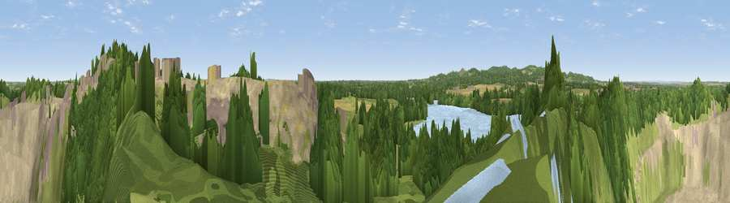

Viewpoint near Mountsorrel
#24968 in England · top 32% of its area beats it · near MountsorrelWhere it is
The exact computed spot (SK 56425 14625). Click the marker for map links.
The view, rendered

A 360° render of this exact spot computed from the terrain model, tree cover and land cover — summer colours, afternoon light, calibrated against photographs of famous viewpoints. Real trees, hedges and buildings will differ in detail.
The panorama
Grey silhouette: terrain skyline in each direction (720 bearings, Earth curvature and refraction included). Dashed green: skyline with trees (+15 m) and buildings (+8 m) as obstacles. Blue strip: how far the ground is visible on each bearing.
Where the view opens
Wedge length = distance to the farthest visible ground on that bearing (vegetation-aware). Rings at 10, 25 and 50 km.
What fills the view
30% bare ground · 28% woodland · 27% grassland · 7% cropland · 4% built-up · 4% water
Angular shares of the visible panorama (visual magnitude), not map area. Landscape diversity 0.66 (0–1 Shannon).
Key numbers
More beautiful places nearby
The staircase of upgrades: each row has a higher view potential than everything closer. Driving times are estimates from straight-line distance, calibrated against real road routing — check an actual route before setting out.
| Place | Direction | Drive | Score |
|---|---|---|---|
| Viewpoint near Mountsorrel | ESE · 1 km | ~2 min | 52.8 |
| Broombriggs Hill | W · 5 km | ~11 min | 74.4 |
| Viewpoint near Woodhouse Eaves | W · 5 km | ~12 min | 77.7 |
| Viewpoint near Mow Cop | WNW · 82 km | ~106 min | 80.2 |
| Viewpoint near Little Wenlock | W · 93 km | ~118 min | 84.2 |
| The Wrekin | W · 94 km | ~118 min | 85.0 |
| Viewpoint near Little Wenlock | W · 94 km | ~118 min | 86.6 |
| North Hill | SW · 105 km | ~129 min | 86.8 |
52.72634, -1.16595 · source: screening · position refined by local search. Computed location — check access rights before visiting.